Part 0: Setup
Overview
This section explores text-to-image generation using the DeepFloyd IF model, a state-of-the-art diffusion model that generates 64×64 pixel images from text prompts. We test the model on three different prompts and investigate the effect of varying the number of inference steps on image quality and prompt adherence.
Random Seed: All experiments use random seed 42
for reproducibility across the entire project.
Text Prompts and Generation Results
The model was tested on three diverse prompts to evaluate its capabilities:
- Prompt 1: "an oil painting of a snowy mountain village"
- Prompt 2: "a man wearing a hat"
- Prompt 3: "a rocket ship"
Each prompt was generated with two different num_inference_steps values
to compare quality and generation characteristics. The top row shows results with
20 steps, while the bottom row shows results with 50 steps.
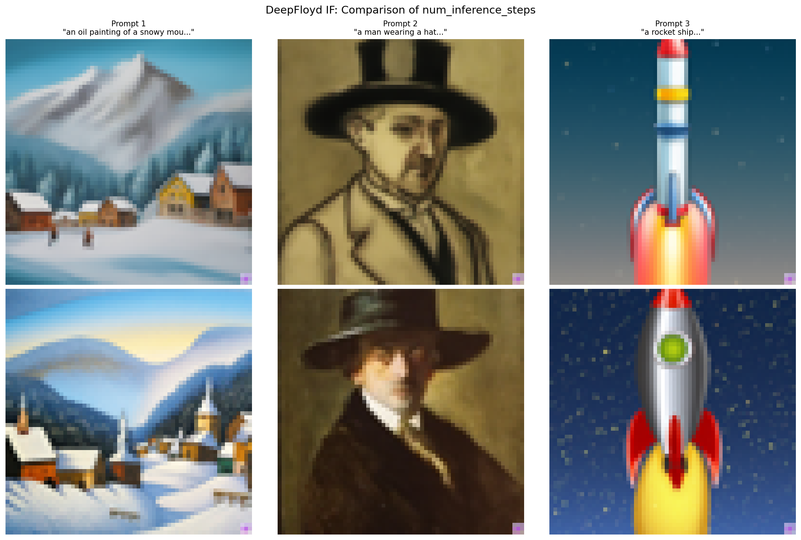
Quality Assessment by Prompt
Prompt 1: "an oil painting of a snowy mountain village"
Both the 20-step and 50-step versions successfully capture the artistic style of an oil painting with visible brushwork-like textures and painterly quality. The generated images show clear mountain structures with snow coverage and village elements in the foreground. The color palettes appropriately use cool blues and whites for snow, with warmer earth tones for the village structures. Comparing the two versions, the 20-step result (top) has a slightly more impressionistic, looser style with bolder color transitions, while the 50-step result (bottom) exhibits more refined details, smoother gradients, and more architectural features in the village buildings. Both successfully combine stylistic instructions ("oil painting") with semantic content ("snowy mountain village"), though the 50-step version shows more coherent spatial relationships between elements.
Prompt 2: "a man wearing a hat"
This prompt produces interesting variations between the two inference step counts. The 20-step version (top) generates a portrait-style image with a distinctly Western or frontier aesthetic, featuring a wide-brimmed hat and period clothing rendered in warm, sepia-like tones. It shows more of an outline, however, than a full oil painting. The 50-step version (bottom) takes a more classical portrait approach with a different hat style (possibly a top hat or formal hat) and darker, more refined rendering. Both correctly identify and emphasize the hat as the key feature, but they interpret the prompt differently in terms of artistic style and historical period. The 50-step version shows noticeably better facial definition, smoother skin tones, and more precise rendering of fabric textures and shadows.
Prompt 3: "a rocket ship"
The rocket ship prompt demonstrates the most visible difference between the two inference step counts. The 20-step version (top) generates a vertically-oriented rocket with clear structural elements including a pointed nose cone, cylindrical white body with yellow/gold striping, and red fins or boosters. The background is a gradient suggesting atmosphere or sky. The 50-step version (bottom) produces a more polished and detailed rocket with similar color scheme (red, yellow, white) but with better-defined edges, more realistic lighting effects showing the rocket engines firing, and a starfield background suggesting space rather than atmosphere. The 50-step version also shows improved geometric precision in the rocket's construction and more coherent representation of the exhaust/propulsion system. Both successfully capture the essential characteristics of a rocket, but the 50-step version is significantly more refined and visually appealing.
Effect of num_inference_steps
I tested two different values for num_inference_steps: 20 and 50.
This parameter controls how many denoising iterations the diffusion model performs,
directly impacting both generation quality and computational cost.
Observations on Inference Steps:
- 20 Steps: Produces coherent images with good prompt adherence in significantly less time. The results show that even with fewer denoising steps, the model captures the essential elements of each prompt effectively. However, images may have slightly rougher textures, less refined details, and occasionally less precise geometric features.
- 50 Steps: Generates images with noticeably improved fine details, smoother textures, and better-defined edges. The additional iterations allow for more refined denoising, resulting in cleaner compositions, more accurate geometric rendering (especially visible in the rocket ship), and better overall visual polish. Colors tend to be more saturated and gradients more natural.
- Quality vs. Speed Trade-off: While both step counts produce recognizable and prompt-adherent images, the quality improvement from 20 to 50 steps is clearly visible, particularly for prompts requiring precise geometric features or fine details. The difference is more pronounced than anticipated, suggesting that for final-quality outputs, 50 steps may be worth the additional computational cost. However, 20 steps remains viable for rapid prototyping or when generation speed is prioritized over maximum quality.
- Prompt Dependency: The benefit of additional steps varies by prompt complexity. The rocket ship (geometric, technical) showed the most improvement with 50 steps, while the oil painting (artistic, impressionistic) showed more subtle differences. The portrait showed intermediate improvement, primarily in facial features and fabric textures. This suggests that prompts requiring precise rendering benefit more from additional inference steps.
Part 1: Understanding the Forward & Reverse Processes
Overview
This section explores the fundamental mechanics of diffusion models.
1.1: Forward Process (Adding Noise)
The forward process gradually corrupts a clean image by adding Gaussian noise at different timesteps. This process follows the equation:
x_t = sqrt(α̅_t) · x_0 + sqrt(1 - α̅_t) · ε
where x_0 is the original image, α̅_t is the cumulative product of alphas at timestep t, and ε is random Gaussian noise. As t increases, the image becomes progressively noisier until it resembles pure noise.
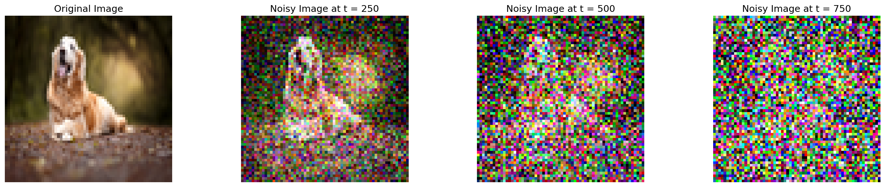
The visualization shows how the original image progressively degrades as we move to higher timesteps. At t=250, the image structure is still recognizable with moderate noise. By t=500, significant degradation occurs with only rough shapes remaining visible. At t=750, the image is almost entirely dominated by noise, with very little of the original structure discernible. This demonstrates the forward diffusion process's ability to systematically destroy information in a controlled manner.
1.2: Traditional Denoising with Gaussian Blur
As a baseline, we apply traditional Gaussian blur filtering to denoise the corrupted images. While Gaussian blur can reduce high-frequency noise, it cannot recover the lost structural information.
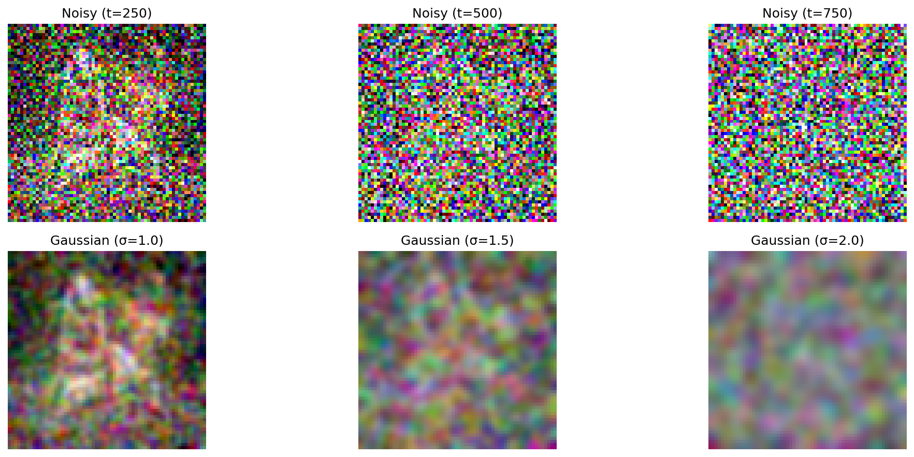
Why Gaussian Blur Falls Short: The results clearly show the limitations of traditional filtering approaches. While Gaussian blur smooths out some noise, it simultaneously blurs genuine image features, resulting in a loss of sharpness and detail. More critically, it cannot reconstruct information that was destroyed by the noise. It merely smooths what remains. At high noise levels (t=750), Gaussian filtering produces only a blurry, featureless result that bears little resemblance to the original image. This demonstrates why learning-based approaches are necessary for effective diffusion model denoising.
1.3: One-Step Denoising with Pretrained UNet
Instead of simple filtering, we now use a pretrained diffusion model (DeepFloyd) to predict the noise component and estimate the clean image in a single step. The model is conditioned on the noise level (timestep t) and learns to reverse the diffusion process.
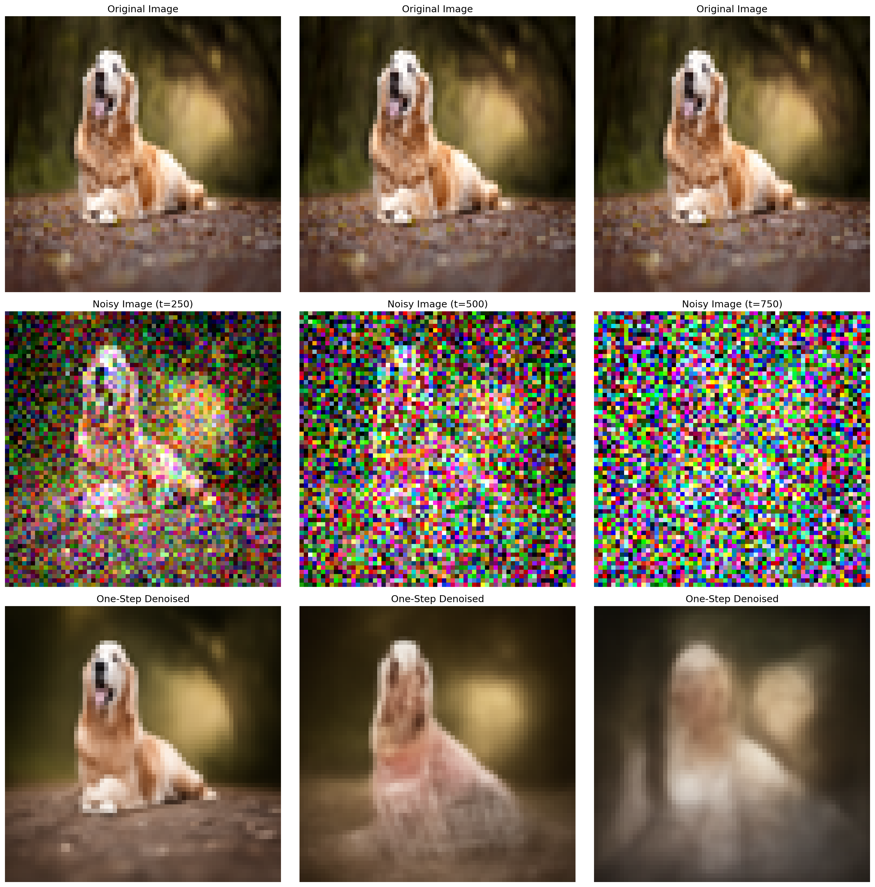
The one-step denoising results show dramatic improvement over Gaussian blur. The UNet has learned to predict the noise pattern and can estimate the underlying clean image structure even from heavily corrupted inputs. At lower noise levels (t=250), the one-step approach recovers much of the original image content. However, at very high noise levels (t=750), while the result is more structured than Gaussian blur, it still shows significant artifacts and doesn't fully recover the original image. This limitation motivates the iterative denoising approach explored next.
1.4: Iterative Denoising
Rather than attempting to denoise in a single large step, iterative denoising progressively removes noise through multiple small steps. Starting from a very noisy image (t=990), we repeatedly apply the UNet to gradually refine the image, moving through intermediate noise levels until reaching a clean result.
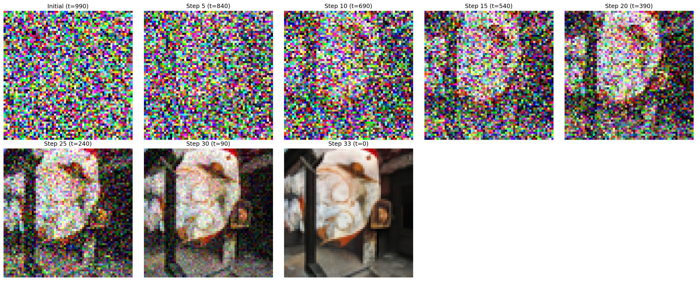
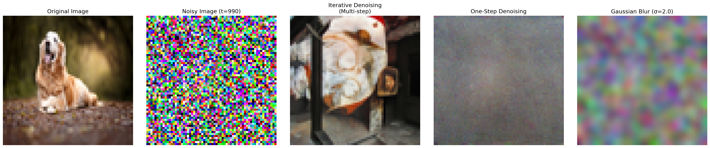
Iterative Denoising Performance: The comparison clearly demonstrates the superiority of iterative denoising. While starting from extreme noise (t=990), the iterative approach gradually builds up coherent structure through approximately 33 denoising steps. Each step makes a small correction, allowing the model to refine its estimate progressively.
Limitations at High Noise: However, it's important to note that the starting noise level (t=990) was extremely high, essentially pure Gaussian noise with almost no trace of the original dog image. While iterative denoising produces a coherent, plausible image, it doesn't perfectly reconstruct the specific original dog because that information was almost entirely destroyed by the forward process. The model instead generates what it predicts a reasonable image should look like given the text conditioning ("a high quality photo"), which may differ from the original. This is an expected limitation when the noise level is so extreme that the input is effectively indistinguishable from random noise.
Part 2: Diffusion Model Image Generation
Overview
Having understood the denoising process in Part 1, we now leverage it for image generation. By starting from pure random noise and iteratively denoising, diffusion models can create novel images conditioned on text prompts.
2.1: Sampling Without CFG
The most direct application of our iterative denoising is image generation from pure noise. We start with random Gaussian noise and condition the denoising process on a text prompt ("a high quality photo") to guide the generation toward coherent images.
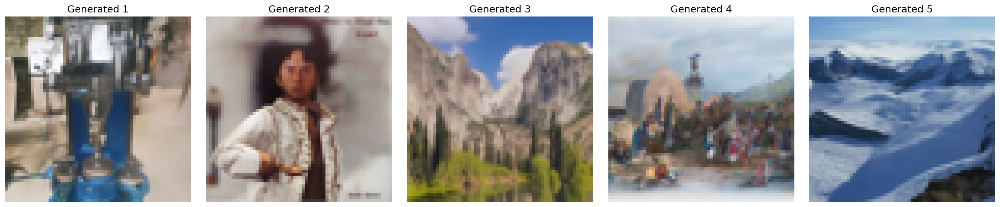
The results demonstrate that diffusion models can successfully generate diverse, coherent images from pure randomness. Each generated image is plausible and exhibits reasonable structure, though the prompt "a high quality photo" is quite generic, leading to varied outputs. The images show that the model has learned meaningful visual patterns during training and can synthesize novel content. However, without stronger guidance, the generations may not strongly adhere to specific desired characteristics.
2.2: Sampling With Classifier-Free Guidance (CFG)
Classifier-Free Guidance improves generation quality by combining conditional and unconditional predictions. Instead of using only the text-conditioned noise prediction, CFG computes:
ε = ε_uncond + γ · (ε_cond - ε_uncond)
where ε_uncond is the unconditional noise prediction (empty prompt), ε_cond is the conditional prediction (with text prompt), and γ is the guidance scale. When γ > 1, this amplifies the difference between conditional and unconditional predictions, making the model more strongly adhere to the text prompt.
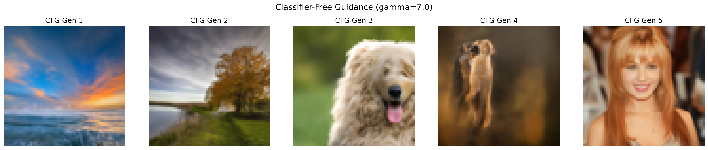
Why CFG is Better: Comparing these results with the non-CFG generations from section 2.1, we observe improved image quality and coherence. CFG provides stronger guidance toward the text prompt by explicitly modeling what makes an image match the prompt versus not matching it. The guidance scale γ=7.0 amplifies this distinction, resulting in images that more confidently exhibit "high quality photo" characteristics. The images tend to have better composition, clearer subject matter, and fewer artifacts. This demonstrates why CFG has become standard practice in modern diffusion models. It provides a tunable way to trade off between diversity and prompt adherence, typically yielding more desirable results at moderate guidance scales.
2.3: Image-to-Image Translation
Beyond generating from pure noise, we can edit existing images by adding intermediate amounts of noise and then denoising with text guidance. Lower noise levels preserve more of the original structure while allowing subtle modifications, whereas higher noise levels permit more dramatic transformations.
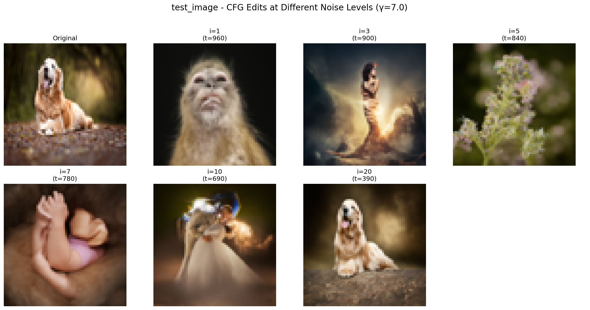
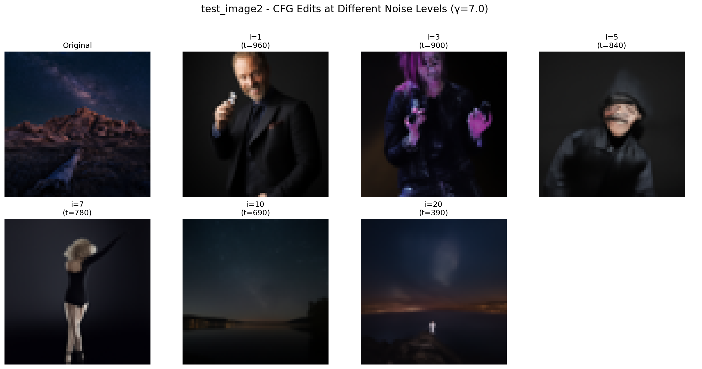
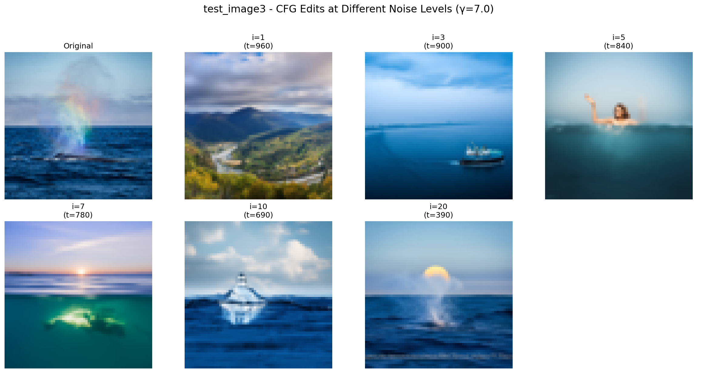
Image Editing Results: The progression across different noise levels:
I also contributed two of my own images for editing: A photograph of the night sky in Joshua Tree National Park, and a photo of a blue whale that I took on a boat ride in Channel Islands National Park.
Part 3: Visual Anagrams
Overview
Visual anagrams are a fascinating application of diffusion models where a single image reveals different interpretations depending on how it's viewed. By carefully composing noise predictions during the generation process, we can create images that appear as one object normally but transform into a completely different object when flipped or rotated. This technique was introduced in the CVPR 2024 paper "Visual Anagrams: Generating Multi-View Optical Illusions with Diffusion Models".
Implementation Credit
The visual anagrams implementation used in this project is based on the method described in the 2024 CVPR paper. The technique works by running the diffusion model with different text prompts for different views of the same noise tensor. During each denoising step, the noise predictions for each view are averaged together, creating a composite gradient that satisfies multiple objectives simultaneously. This allows the model to generate images that are coherent under multiple transformations.
Visual Anagram Examples
The following examples demonstrate various visual anagrams created using diffusion models. Each image is designed to appear as one object in its normal orientation and reveal a different object when transformed (typically flipped upside-down or rotated).
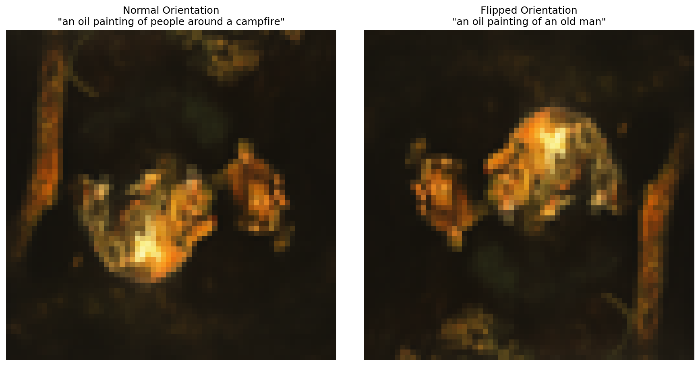
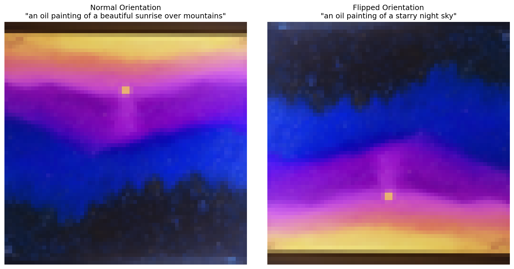
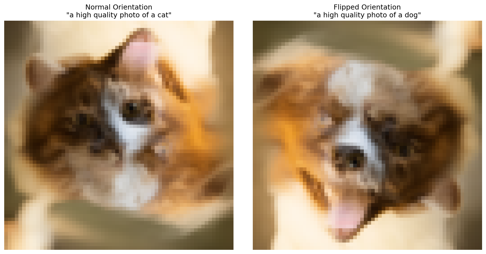
Visual Anagram Analysis: These examples showcase the remarkable capability of diffusion models to satisfy multiple competing objectives simultaneously. The generated images must maintain coherent visual structure for two completely different semantic concepts, which requires the model to find visual features that can be interpreted in multiple ways depending on orientation.
The success of these visual anagrams demonstrates several key insights about diffusion models: (1) they have learned robust internal representations that can be composed in non-trivial ways, (2) the iterative denoising process allows for complex constraint satisfaction across multiple objectives, and (3) natural images contain enough ambiguity and structural flexibility that multiple semantic interpretations can coexist in the same pixel arrangement.
This technique opens up creative possibilities for generative art and demonstrates that diffusion models can be guided to produce outputs that satisfy complex, multi-faceted criteria beyond simple text-to-image generation.
Technical Approach
The visual anagram generation process works by modifying the standard diffusion sampling loop. At each denoising timestep:
- The current noisy image is transformed according to each desired view (e.g., normal and upside-down)
- Each transformed version is passed through the UNet with its corresponding text prompt
- The noise predictions are transformed back to the original orientation
- All noise predictions are averaged together
- The averaged prediction is used to perform the denoising step
This averaging ensures that the denoising step makes progress toward satisfying all views simultaneously, gradually converging to an image that appears coherent under all specified transformations.